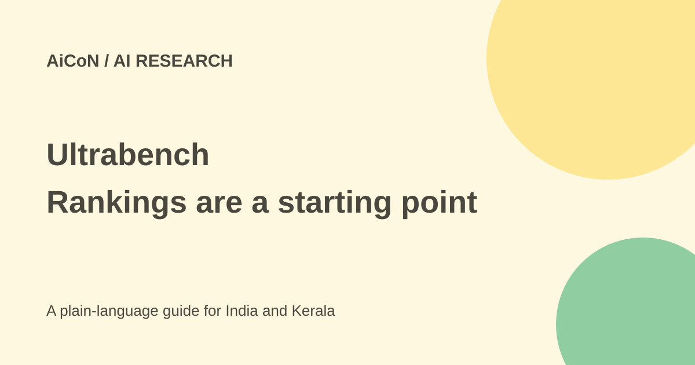

Ultrabench: compare models, then test your own task
Ultrabench is Iternal Technologies' public AI benchmark aggregator. It combines published results with prices and hardware information. Its intelligence index is an aggregator's method, not a universal measure of which model is best for you.

What is being aggregated?
The company's October launch says the index combines ten core benchmarks on a zero-to-100 scale. It describes source links and trust ratings, with vendor-reported scores given less weight than independent results.
The launch listed 309 tracked models and 530 benchmarks. Those are launch counts, not a verified current total. The live site can change, and its rendered leaderboard needs JavaScript.
Why an index has limits
Combining results requires choices about weights, missing scores and test conditions. Models may have different versions, reasoning settings, tool access or evaluation budgets. A single decimal score can conceal these differences.
Price-per-million-token comparisons also need context. Input and output rates, cached tokens, reasoning tokens and provider fees can affect the real bill. Verify the exact vendor price before making a paid decision.
How to use it well
- Open the official site and check the date and version of the data.
- Find the exact model variant and provider you intend to use.
- Inspect source links for the scores relevant to your task.
- Check whether a figure is independently measured or vendor-reported.
- Review the index method and avoid comparing models with very different missing data.
- Verify current pricing and hardware requirements with the model or provider's own documentation.
- Run a small labelled test using your actual language, documents and workflow.
- Compare accuracy, latency, privacy and total cost before choosing.
Public data and free access
The fetched site says its data is served from a public key-free JSON API, including leaderboard and snapshot routes. We confirmed that statement on the site, but did not inspect the full API dataset in this review.
Free comparison data does not make the listed models free to run. Hosted inference, local hardware, memory and integration work can cost money. No fixed INR price applies to the whole index.
For Indian developers and businesses
A global ranking may not measure Malayalam, local names or your document formats. Build a short test set reflecting what users actually ask, and include no-match and failure cases.
Check whether a model can meet your data and hosting rules. The highest benchmark score may be a poor fit if it is too costly, too slow or unavailable through your allowed provider.
What changed since the original post?
The earlier 309-model count is kept as the October launch's count rather than presented as live. We separate Iternal's weighted method and source policy from independently verified model performance. No leaderboard API or model benchmark was run.
Frequently asked questions
Is the highest index always best?
No. Test your own task, language and constraints.
Are API rates guaranteed current?
Check the provider directly before spending; the aggregator is a lead.
Does a hardware estimate prove compatibility?
No. Confirm the exact model, software and memory requirements.
Sources: Ultrabench public site · Iternal-issued launch via PR Newswire. Checked 7 October 2026.